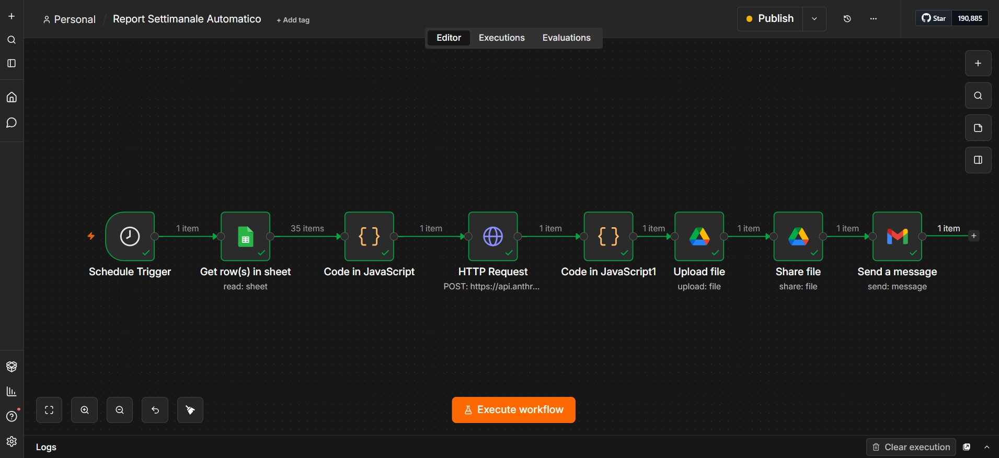

Penso la soluzione, scelgo lo strumento per costruirla. Vengo dalle operations industriali: qui sotto non trovi un curriculum, trovi le prove.
Strumenti diversi per problemi diversi: imparo quello che serve di volta in volta. Ogni blocco raccoglie i lavori fatti con quello strumento.

I dati degli interventi tecnici erano su Google Sheets ma nessuno li leggeva ogni settimana.
n8n legge i dati ogni venerdì, li passa a Claude API che genera una dashboard HTML, salvata su Drive e inviata via email.
Report professionale consegnato in automatico ogni settimana — zero intervento manuale.
Report interattivi costruiti con Claude API a partire da dati reali: KPI operativi, interventi tecnici, analisi geografiche.
Nel mio lavoro coordinavo interventi tecnici su impianti di aria compressa e refrigerazione. I dati erano distribuiti tra Excel e CRM, senza una vista unificata. Ho ricreato la struttura del problema con dati rappresentativi e costruito questo report automatico tramite Claude API.
Apri dashboard →Simulazione di un report executive costruito per supportare decisioni strategiche. L'obiettivo era dimostrare come trasformare dati grezzi in una vista chiara per chi deve decidere: margini, andamenti e aree critiche in un colpo d'occhio.
Apri dashboard →Estensione visiva della dashboard CEO: stessa base dati, rappresentata geograficamente stato per stato. L'obiettivo era rendere immediatamente leggibile dove il business performa e dove no — senza tabelle, solo colore e impatto visivo.
Apri dashboard →Un esempio più essenziale rispetto agli altri: mostra che lo stesso approccio — dati CSV, Claude API, output HTML — funziona anche per report operativi semplici, non solo per viste executive elaborate.
Apri dashboard →Progettare un applicativo funzionante richiede una logica diversa da una dashboard: bisogna pensare a chi lo usa, cosa fa, come si muove tra i dati. Questi progetti lo dimostrano.
Le piccole e medie imprese di servizi tecnici spesso gestiscono clienti, interventi e opportunità commerciali su fogli Excel separati. Ho progettato un CRM operativo completo che centralizza tutto in un unico strumento: anagrafica clienti, storico interventi tecnici (con filtri per stato e priorità), pipeline commerciale Kanban e dashboard KPI. Dati e navigazione funzionano interamente nel browser, senza backend.
Apri il CRM →La lista cresce ogni volta che un problema chiede uno strumento nuovo.
Aperto a nuove opportunità in operations, digital transformation e automazione dei processi. Se cerchi un profilo che unisce esperienza industriale e mentalità digitale, scrivimi.